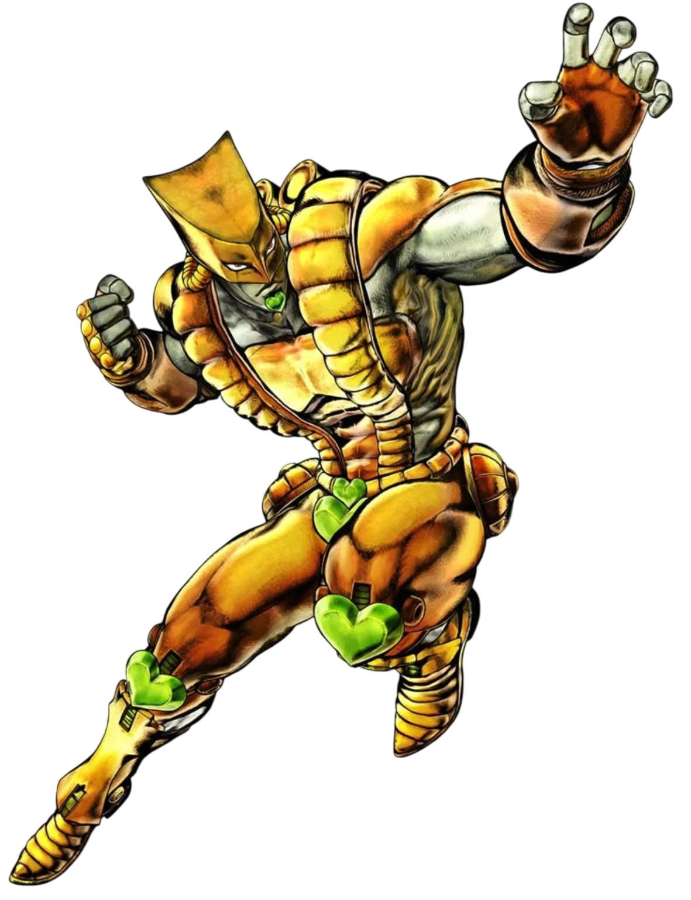
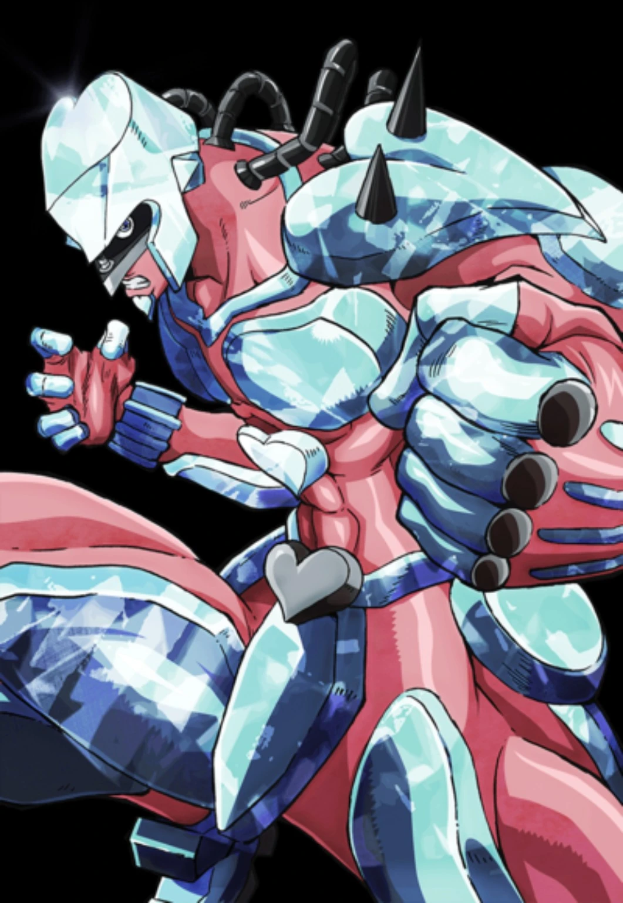
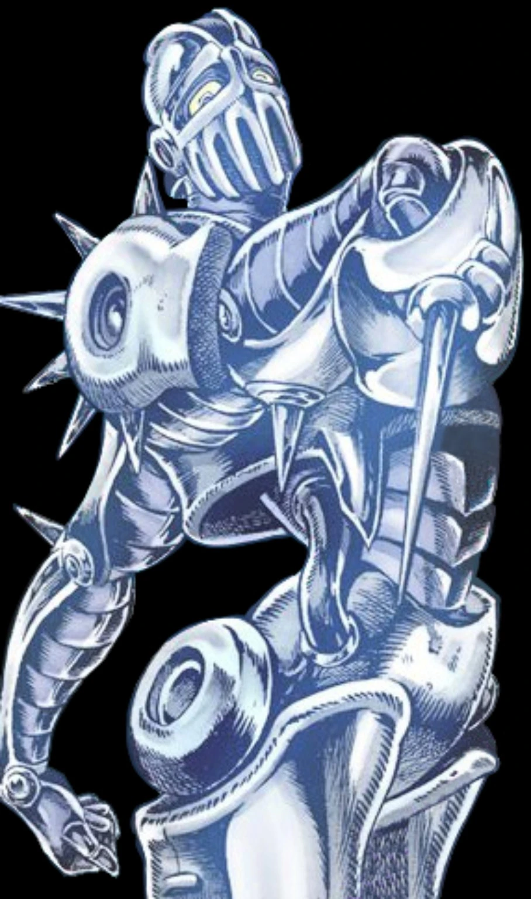
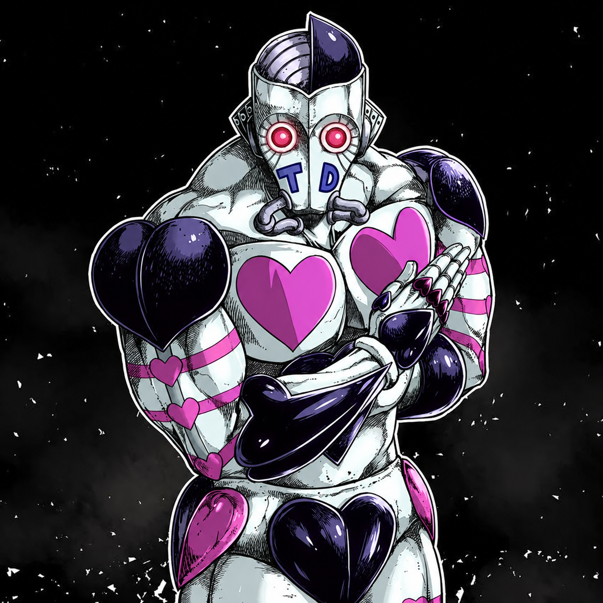
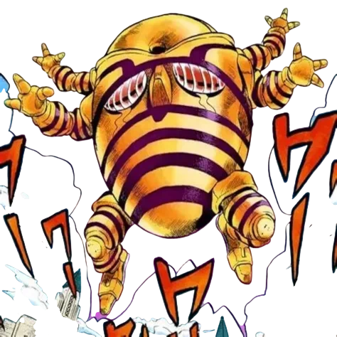

近战 / 暴击 / 时停
STAR PLATINUM
以强力拳击和 Barrage 近身作战。未暴击的命中会累积暴击机会，并拥有 Star Finger 与 5 秒 Time Stop。
查看详细指南（EN）→
这是一份帮助你真正理解 Project JoJo 系统的中文指南：从 Stand Arrow、瞄准、替身等级、PvP，到每个替身的核心玩法，而不只是记住技能名称。
9 个核心替身 + 官方 Addon。中文首页已完成；每个替身的深度页面暂时链接到英文版，避免旧资料或错误翻译覆盖最新机制。
以强力拳击和 Barrage 近身作战。未暴击的命中会累积暴击机会，并拥有 Star Finger 与 5 秒 Time Stop。
查看详细指南（EN）→

战斗积累 Restore Gauge，然后切换模式治疗队友、修复支持的物体，或使用 Glass Mark/Homing。
查看详细指南（EN）→





多 ACT 官方 Addon，以 Nail 为资源，从远程射钉和 Wormhole 逐步成长到 ACT4 与 Infinite Rotation。
查看详细指南（EN）→Mouse / Pointer 按鼠标方向；Facing Direction 按角色朝向；Controller Aim 使用手柄瞄准轴，并在死区回退到角色朝向。
可选择 Normal / Minimal / Hidden，调节 HUD 透明度、缩放与个人 Project JoJo 音量。
默认关闭。关闭时从已加载 Stand Pool 随机；开启后使用 Arrow 会显示已注册替身的选择列表。
控制 Stand Arrow 稀有度。默认 1x 时，僵尸基础掉落率约为 1/250，并且也可能出现在世界战利品中。
开启时每个替身分别保存 Lv.1–100 进度；关闭时替身直接使用完整强度，但已有进度仍会保留。
普通 Arrow 成功使用 3 次：3/3 → 2/3 → 1/3 → 消失。开启 Infinite 后，成功使用不会消耗 Condition。
技能按真实射程检查攻击线上的第一个有效碰撞，不会因为鼠标指得更远就穿过前方身体或墙体。
支持的进攻型 Barrage 在双方足够接近且确实互相面对/瞄准时可以碰撞并相互抵消。
支持的 Barrage 会形成前方防线，可阻挡部分投射物，例如 TW Knife、SC Rapier Shot 与 CD Glass。
SP 停时 5 秒，TW 停时 9 秒。被冻结的角色、延迟伤害与移动投射物会在时间恢复后继续。
两个时间系统不会无条件叠加；如果 Erase 先开始，Stop 时长会先与剩余 Erase 时间抵消。
已注册替身处于召唤状态时，替身使者受到的净伤害降低 33%。这不是无敌。
双动作技能 HUD 使用简短的 技能/技能 命名，例如 CROSS FIRE/FIRE TRAP。Silver Chariot 在 Armor Off 冷却期间仍可正常 Summon/Dismiss。
Lv.1 = 50% damage • Lv.100 = 120% • 约 1,059 次 Stand 击杀达到 mastery。
Tusk .248 • Harvest .4.26 • Heaven's Door .2.20 • ATUM .069